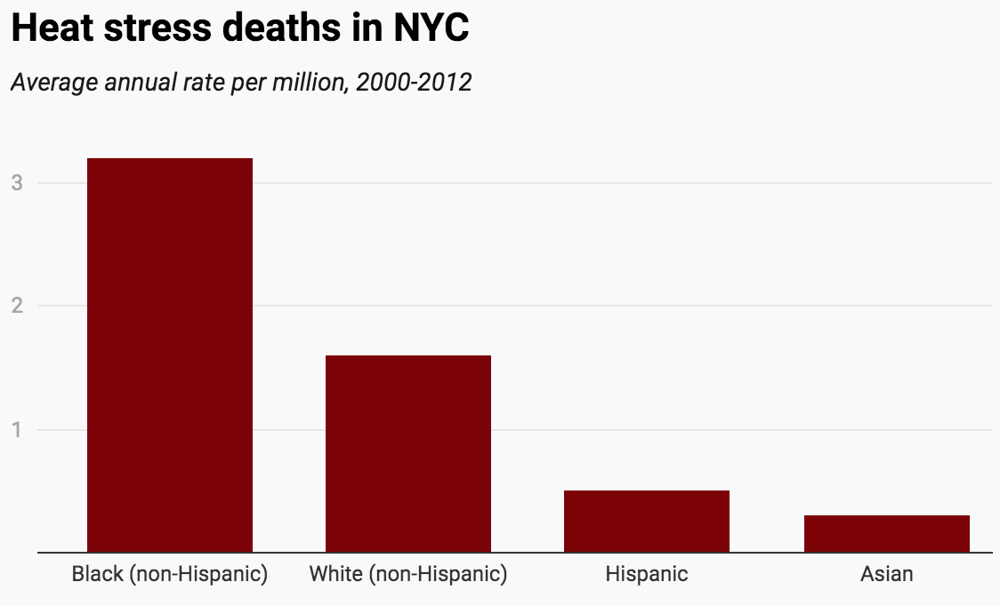

Extreme heat is the deadliest
weather phenomenon worldwide
Using This Map:
The legend below shows how both variables intersect on the map.
map
In New York City, the risk of death from heat is unfairly distributed across neighborhoods. The city's Department of Health and Mental Hygeine has identified environmental and social factors associated with increased risk to create a Heat Vulnerability Index.
These factors include:
The goal of this analysis is to identify neighborhoods at highest risk and help inform neighborhood-level policies and programs that can protect people - sending resources to where they're needed the most.
Neighborhoods are scored from 1 (lowest risk) to 5 (highest risk).
Black New Yorkers suffer these disproportionate health impacts from heat due to social and economic disparities. These disparities stem from structural racism, which includes neighborhood disinvestment, racist housing policies, fewer job opportunities and lower pay, and less access to high-quality education and health care.
Overall, these systems limit access to resources that protect health. While many factors affect a neighborhood’s heat risk, Black New Yorkers are subjected to higher rates of poverty and lower access to air conditioning, green space, and neighborhood cooling resources.
